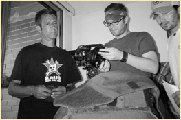
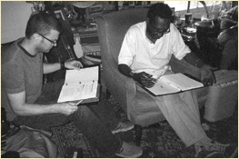

Filmmakers
Eric Poydar and Brett Portanova first met on the set of David Mamet’s State & Main, working as whipping-boy PA’s. Eric had the job of driving the cast around (the producers obviously unaware of his suspect driving record) while Brett lurked in the background with a walkie-talkie, ready to get really important things for really important people. With important movie stuff occupying most of their time on and off the set, their friendship was ultimately forged on the football field during the lunchtime cast/crew games. Alec Baldwin (yes, The Shadow) was quarterback, and Poydar and Portanova his two painfully average receivers. The two eventually realized that they had more in common then just their stone hands – neither ran the crisp routes Baldwin so meticulously drew up in the huddle. That, and they shared the desire to become two of Boston’s best filmmakers.
After the film wrapped, Poydar and Portanova began writing together, working on a screenplay Eric had developed called 4Vienna. The two scribes wrote and re-wrote for months – moods varied from head-butting battles over dialogue, to high-fives about how they combined to form the greatest writing team in the history of people who write stuff. Upon completion, the writing duo was invited to attend IFP East in New York City, where 4Vienna became one of twenty scripts in the country to be selected for the elite networking workshop. It was fun. Soon thereafter, the script won Finalist status at the Los Angeles based Scriptapalooza (top 30 of 3,000) and the fellas thought they might actually be able to do this thing.
Copyright 2008, Bootleg Productions, LLC. All rights reserved.